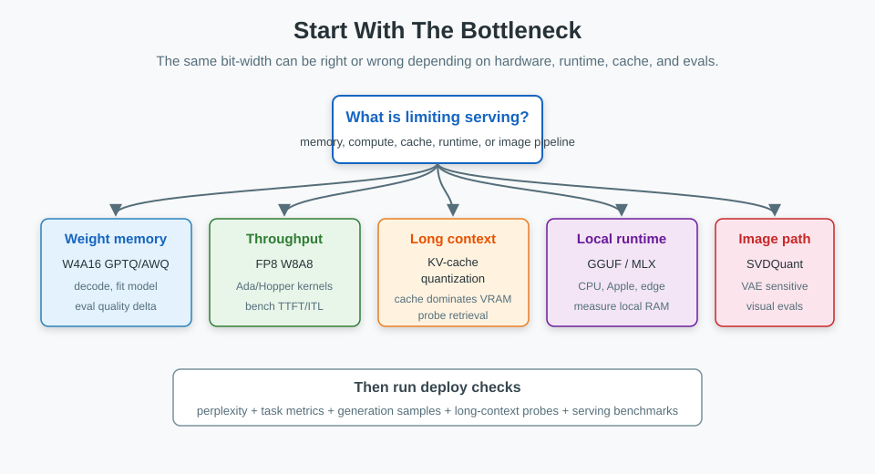
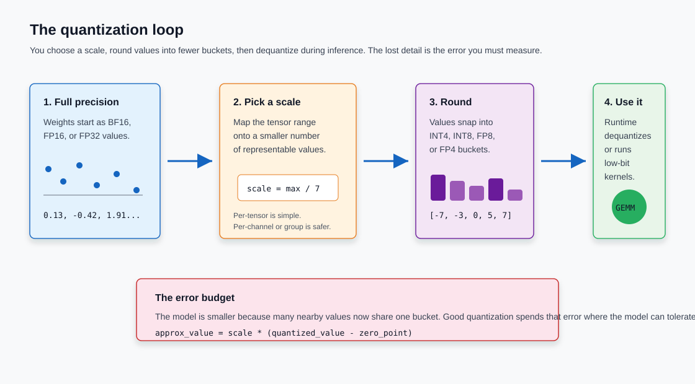
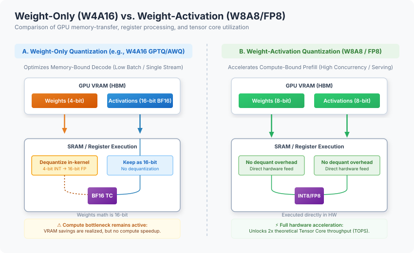
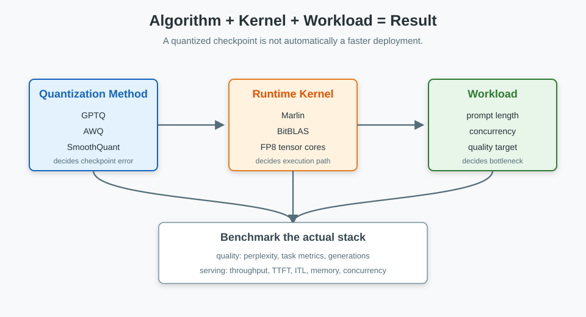
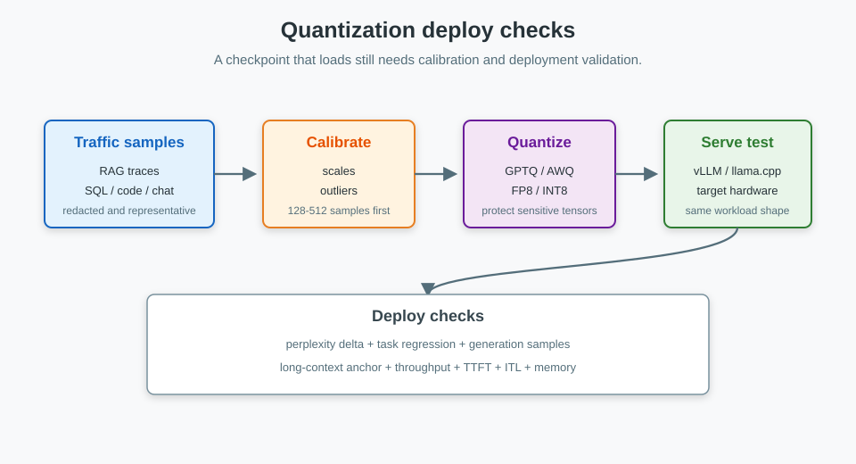

Model Quantization in 2026: From Foundations to Production Serving
Quantization is rarely a single button you press to use fewer bits and save memory.
In production serving systems, quantization requires balancing weight memory, activation compute, KV cache size, runtime kernels, hardware support, calibration data, and quality. A 4-bit model might fit in VRAM but run slowly if the kernel is poorly optimized. FP8 is excellent on NVIDIA Hopper GPUs but useless on hardware without native FP8 tensor cores. KV-cache quantization can matter more than weight quantization when handling long context and high concurrency; it changes the numeric format used to store and read the cached key/value tensors.
TL;DR: Pick the bottleneck before you pick the bit-width. Use AWQ or GPTQ when weights don't fit in VRAM. Use FP8 W8A8 when you serve high-throughput workloads on GPUs with FP8 support. Test KV-cache quantization when long context or high concurrency eats memory. Use GGUF files with llama.cpp tensor encodings such as Q4_K_M, Q5_K_M, or Q8_0 for local CPU, Apple Silicon, and desktop inference. Keep NF4 mostly for QLoRA-style fine-tuning, not as the default production serving format.

1. Start with the bottleneck
The useful question is not "How many bits can I remove?" It's "What is limiting this workload right now?"
Common bottlenecks and their starting points:
| If this is the problem | Start here | Typical tools | Check before deploy |
|---|---|---|---|
| Model weights don't fit in VRAM | W4A16 weight-only quantization | AWQ or GPTQ with llm-compressor or GPTQModel |
Perplexity, coding, reasoning, instruction following |
| High-throughput serving is compute-bound | FP8 or INT8 W8A8 | FP8 PTQ, SmoothQuant, TensorRT-LLM, vLLM | Throughput, TTFT, task accuracy |
| Long context or high concurrency fills the GPU | KV-cache quantization | vLLM, TensorRT-LLM, or Transformers QuantizedCache | Long-context retrieval, latency, safety, and quality |
| Local inference on CPU, Apple Silicon, or desktop | GGUF files with local tensor encodings | llama.cpp, Ollama, LM Studio |
Prompt latency, RAM use, selected tensor encoding, and subjective output quality |
| Adapter fine-tuning must fit on one GPU | NF4 / QLoRA | bitsandbytes, peft |
Fine-tuning loss and merged-model quality |
| Image generation pipeline is too large or slow | Diffusion-specific INT4 or FP8 | SVDQuant, Nunchaku, torchao, NVIDIA ModelOpt |
Visual artifacts, prompt alignment, latency, VRAM |
Use this table as the map. The sections below explain why those starting points differ.
A few terms before the math
- W{x}A{y} tells you the precision for supported weight and activation math, usually GEMM paths in serving engines. W4A16 stores weights in 4-bit form and keeps activations in 16-bit precision. W8A8 uses 8-bit weights and activations in supported compute paths, but it does not automatically define the persistent storage dtype of every runtime tensor.
- FP8, INT8, INT4, NF4 are number formats. They decide what values can be represented.
- GPTQ, AWQ, SmoothQuant, QuaRot are algorithms. They decide how to map a trained model into a lower-precision format.
- GGUF is a file format, not a quantization algorithm. It stores tensors plus metadata for GGML and
llama.cpp-style runtimes. A GGUF file can contain unquantized tensor types such asF16,BF16, orF32, or quantized tensor encodings and presets such asQ4_K_M,Q5_K_M,Q8_0,IQ*,TQ*, orMXFP4. Do not readGGUFas a CUDA-style FP8 W8A8 serving recipe. - KV cache is the attention cache used during generation. It stores prior keys and values so the model doesn't recompute the whole conversation at every token.
- KV-cache quantization stores cached key/value activation tensors in a lower-precision cache format such as FP8, INT8, INT4, or INT2, depending on runtime support. This is different from prefix caching, PagedAttention, or offload, which decide whether cache entries are reused, how they are allocated, or where they live.
- GEMM means general matrix multiply. Most transformer inference time is spent doing matrix multiplication.
2. Quantization is controlled rounding
Quantization maps high-precision values into a smaller set of representable values. You save memory and bandwidth. You also introduce rounding error.
Quantizing from BF16 to INT4 reduces the available values to just 16 discrete buckets. If these buckets accurately capture the model's weight distribution, you save memory without losing capabilities. If the quantization grid crushes an important outlier channel, the model loses reasoning, instruction following, or visual fidelity.
Symmetric and asymmetric mapping
Quantization maps a continuous float value \(x \in [\beta, \alpha]\) to a discrete grid.
- \(x\) is the original high-precision value.
- \(x_q\) is the quantized value.
- \(s\) is the scale, or step size.
- \(z\) is the zero point, the integer location that represents
0.0. - \([q_{\min}, q_{\max}]\) is the target integer range. Signed 4-bit values often use \([-7, 7]\).
Symmetric quantization centers the grid around zero and sets \(z = 0\):
This is hardware-friendly because runtime math doesn't need to subtract a zero-point offset.
Asymmetric quantization shifts the grid to cover skewed ranges:
That shifted grid can preserve positive-only activations better, but the offset adds work unless the kernel handles it well.

Scale granularity matters
The scale factor can cover a whole weight tensor, one channel, or a small group of values. Smaller groups usually preserve quality better, but they require storing more scale metadata.
- Per-tensor scaling: Uses one scale factor for an entire weight matrix. It's computationally simple, but a single outlier weight anywhere in the matrix will stretch the integer grid, destroying precision for every other weight in that layer.
- Per-channel scaling: Assigns a separate scale factor to each row (output channel) of the weight matrix. Because different output neurons have different numerical ranges, giving each channel its own scale prevents narrow ranges from losing precision to accommodate wider channels. This is the standard default for 8-bit weight quantization.
- Per-group (block-wise) scaling: Splits each row of the weight matrix into smaller sequential blocks—typically 64 or 128 elements—and assigns a scale factor to each block. This is the sweet spot for 4-bit weight formats because it isolates extreme outlier weights to a tiny local group (e.g.,
group_size=128), preserving accuracy across the rest of the layer's weights.
Weights are static, so their scales can be computed offline before you ever load the model. Activations change with every token, which means their ranges are unpredictable. That creates two serving choices for handling activations:
- Static activation scaling computes activation scales offline using a calibration dataset, then hardcodes those scales into the model. At runtime, the model uses these fixed scales without doing extra math. It's fast, but it only works if your calibration data perfectly matches the input lengths and distributions you see in production. If a production prompt creates an activation spike outside the calibrated range, the model truncates it, breaking the output.
- Dynamic activation scaling calculates the scale for the activations on the fly during the forward pass, looking at the actual token values in that exact moment. It handles prompt variation perfectly and captures unexpected activation spikes, but calculating the min and max of the activation tensor at every layer adds runtime overhead and requires specialized, optimized kernels to be fast.
The KV cache sits between those cases. Keys and values are runtime activation tensors: each layer computes them from hidden states during the forward pass. Once generated, though, they stop being transient matmul intermediates and become persistent serving state that attention reads for later tokens. A serving engine can store that state in lower precision and keep scale metadata alongside it. That cache-storage choice is separate from the activation precision used inside the linear kernels, which is why "KV-cache quantization" is a real term but should not be used as a synonym for every KV-cache optimization.
PTQ and QAT happen at different stages
Post-training quantization, or PTQ, compresses a trained model after the fact. Quantization-aware training, or QAT, exposes the model to quantization noise during training so it can adapt.
| Method | When ranges are learned | Use it when | Cost you pay |
|---|---|---|---|
| Weight-only PTQ | Offline, for static weights | The model doesn't fit or decode is bandwidth-bound | Activations still run in 16-bit |
| Static PTQ | Offline, from calibration prompts | You want fast W8A8 serving | Calibration data must match production |
| Dynamic PTQ | Runtime, per batch or activation path | Input distributions vary a lot | Extra runtime work and narrower hardware support |
| QAT | During training | PTQ breaks quality on a sensitive model | Full training infrastructure and much more compute |
Calibration data has to look like the traffic you will serve. If production prompts are long RAG traces, short Wikipedia paragraphs will give you neat benchmark numbers and a broken deployment. The model will tune its activation scales around short text, then run into different activation patterns when real long-context prompts arrive.
3. Number formats dictate hardware requirements
The number format defines what values the model can represent in memory. But storing a format doesn't mean your GPU can compute with it efficiently. Fast execution requires the hardware to have native tensor cores for that specific bit-width and format.
| Format | Storage per value | Good default for | Main watchpoint |
|---|---|---|---|
| BF16 / FP16 | 2 bytes | Baseline inference and training-compatible serving | High VRAM use and high memory-bandwidth traffic |
| FP8 (OCP) | 1 byte | High-throughput W8A8 serving on Ada, Hopper, Blackwell | Needs native FP8 tensor cores and runtime support |
| INT8 | 1 byte | W8A8 serving on older or non-NVIDIA hardware | Activation outliers and static calibration sensitivity |
| INT4 | 0.5 bytes | W4A16 when weight memory is the main limit | Quality loss on smaller or reasoning-heavy models |
| FP4 / NVFP4 | ~0.5 bytes | Blackwell-era experiments and early serving paths | Hardware-specific compiler and runtime requirements |
| llama.cpp GGUF encodings / presets | Variable | Local CPU, Apple Silicon, desktop, and edge inference | GGUF is the container; the tensor encoding is the quantization choice |
| NF4 | 0.5 bytes | QLoRA adapter training | Usually the wrong export format for production serving |
BF16 and FP16 both use 16 bits, but they distribute precision differently, leading to different failure modes. BF16 keeps the 8-bit exponent range of FP32 and is harder to overflow. FP16 has more mantissa bits but a narrower exponent range, so activation spikes need more care.
FP8 has two common OCP variants. E4M3 gives more precision and is usually used for forward weights and activations. E5M2 gives more dynamic range and is more useful for gradients or volatile activation paths. In Kurtic et al.'s ACL 2025 study, "Give Me BF16 or Give Me Death," FP8 W8A8 was effectively lossless on the Llama-3.1 family over more than 500,000 evaluations. That doesn't mean every FP8 deployment is automatic. It means the format is strong when the serving stack uses it correctly.
Blackwell adds microscaling formats such as MXFP8 and NVFP4. Instead of one scale for a whole tensor or row, microscaling uses tiny blocks. NVIDIA's NVFP4 stores 4-bit floating-point values in blocks of 16, with FP8 scale factors and a higher-level FP32 scale. This approach aims to provide a near-INT4 footprint with floating-point behavior. However, it requires a matching hardware architecture, compiler, and runtime support.
4. Weight-only vs. weight-activation quantization
The notation WxAy describes the precision of weights and activations, which stress the GPU in different ways during inference.

During prefill, the model processes the input prompt. This phase is usually compute-bound because the GPU is doing large matrix multiplications.
During decode, the model generates one token at a time. This phase is often memory-bandwidth-bound because the GPU keeps loading weights from VRAM to produce the next token.
W4A16 compresses weights and keeps activations in BF16 or FP16. The GPU loads fewer weight bytes, then dequantizes the weights back into a higher-precision form for the multiply. This helps decode and fit-to-memory problems. It doesn't magically speed up compute-bound prefill, because the actual matrix math still runs in 16-bit.
W8A8 compresses weights and the activation tensors used by supported matmul kernels. If the hardware has native low-precision tensor cores, the serving engine can run matrix math directly in FP8 or INT8. That's why FP8 can help high-throughput serving: it reduces memory traffic and uses faster arithmetic. It does not automatically mean the KV cache is stored in the same 8-bit format; check the runtime's cache dtype or cache implementation separately.
If the model barely fits in VRAM, start with weight-only quantization to reduce the memory footprint. If the model fits but struggles with throughput under high batch loads, evaluate FP8 or INT8 W8A8 to accelerate the compute phase. If memory issues only appear during long conversations, first estimate the KV-cache term. If it dominates, test KV-cache quantization rather than compressing the weights further; if repeated prefixes dominate, enable prefix caching instead.
5. Algorithms vs. runtime kernels
Quantization algorithms (like GPTQ or AWQ) define how the model's weights are mapped to lower precision. Runtime kernels (like Marlin or vLLM's custom kernels) are the low-level GPU code that executes the matrix multiplication. A highly compressed model will only run fast if there is an optimized kernel for its specific quantization format.

JarvisLabs' vLLM benchmark on Qwen2.5-32B-Instruct with an NVIDIA H200 makes the kernel effect visible:
| Quantization / kernel | Perplexity, lower is better | Pass@1, higher is better | Throughput | TTFT |
|---|---|---|---|---|
| FP16 baseline | 6.56 | 56.1% | 461 tok/s | 57.7 ms |
| AWQ | 6.84 | 51.8% | 68 tok/s | 277.8 ms |
| GPTQ | 6.90 | 46.3% | 277 tok/s | 107.1 ms |
| Marlin-GPTQ | 6.97 | 45.7% | 712 tok/s | 51.9 ms |
| Marlin-AWQ | 6.84 | 51.8% | 741 tok/s | 73.5 ms |
| GGUF Q4_K_M | 6.74 | 51.8% | 93 tok/s | 958.0 ms |
| bitsandbytes | 6.67 | 51.8% | 168 tok/s | 135.3 ms |
Don't copy these numbers to your own stack. They come from one model, one GPU class, and one software setup. They show a narrower point: the algorithm name on the checkpoint doesn't tell you how fast serving will be.
For example, AWQ and Marlin-AWQ both use the same 4-bit weights. The Marlin implementation is much faster because its CUDA kernel fuses dequantization and matrix multiplication into a single, highly optimized GPU operation.
Benchmark the baseline and the compressed variants under the same prompt mix:
vllm bench serve \
--model ./outputs/Qwen2.5-32B-Instruct-AWQ-W4A16 \
--dataset-name sharegpt \
--num-prompts 200 \
--input-len 1024 \
--output-len 256
Track throughput, TTFT, inter-token latency, memory use, and task quality. If any of those move in opposite directions, the benchmark is doing its job.
The algorithm menu
Use this table as a map, not as a ranking:
| Algorithm | Common format | What it tries to preserve | Main cost |
|---|---|---|---|
| GPTQ | W4A16 | Layer-wise reconstruction using Hessian estimates | Slow calibration and more complex processing |
| AWQ | W4A16 / W4A8 | Important activation channels | Needs calibration and fused serving kernels |
| SmoothQuant | W8A8 | INT8 activation behavior by moving outlier scale into weights | Per-model scale tuning |
| QuaRot / SpinQuant | W4A4 / W4A8 | Lower activation outlier pressure through rotations | Runtime rotation complexity |
| HQQ | W4A16 / W2A16 | Fast weight-only compression without calibration | Can trail AWQ or GPTQ at very low bit-widths |
| QLoRA (NF4) | NF4 | Adapter training memory | Not a great default for serving |
| llama.cpp GGUF K-quants / IQ-quants | Mixed low-bit tensor encodings | Local inference quality per byte | Not designed for cloud batch serving |
The toolchain is actively evolving. AutoGPTQ was archived in April 2025, and AutoAWQ was archived and officially deprecated in May 2025. For new work, start with llm-compressor for compressed-tensors checkpoints consumed by vLLM, or GPTQModel when you need the active GPTQ path with Marlin, Machete, MoE memory options, and disk offload.
One boundary is worth drawing before leaving the algorithm menu: pruning and distillation also reduce serving cost, but they're not quantization formats. 2:4 structured sparsity removes weights in a pattern that NVIDIA sparse tensor cores can use. Distillation trains a smaller student model to copy a larger one, which can work well for narrow tasks. Both paths need their own training or pruning workflow, so don't mix them into the quantization shortlist unless you actually plan to run that extra work.
6. Serving memory is more than weights
When planning hardware requirements, remember that the compressed checkpoint is only part of the memory footprint. Don't treat this as a second quantization choice. Treat it as the sizing check that tells you whether weight quantization is enough.
Offline quantization can be layer-bounded. Tools such as llm-compressor can load a transformer block, run calibration and quantization math, write the compressed block, and move on. That keeps peak GPU memory closer to the largest active layer plus calibration buffers. You still need CPU RAM and disk for the source checkpoint, but the GPU doesn't always hold the full BF16 model.
Peak GPU memory during offline quantization can look more like this:
Serving is stricter. The whole compressed checkpoint must stay resident with the KV cache and runtime buffers. The KV cache grows with context length and active batch size:
Where:
- \(L\) is the layer count.
- \(H_{\text{kv}}\) is the number of key-value attention heads. Grouped-query attention reduces this by letting many query heads share fewer KV heads.
- \(D\) is the dimension of each head, often 128 or 256.
- \(S_{\text{ctx}}\) is prompt tokens plus generated tokens.
- \(B_{\text{batch}}\) is the active serving batch.
- \(\text{BytesPerValue}\) is 2 for BF16 or FP16 and 1 for FP8 or INT8.
KV-cache quantization is real, but separate from cache reuse
Yes, the KV cache can be quantized during inference. Each decode step produces K and V activation tensors for the new token. A W8A8 model may already use FP8 or INT8 for supported projection math, but the cache is a separate storage object: many serving stacks keep it in the model/cache dtype unless you enable a KV-cache dtype, use a checkpoint with cache scales, or choose a quantized cache implementation. When KV-cache quantization is enabled, the engine writes cache entries as a lower-precision representation plus scales. Later attention reads that lower-precision cache and either dequantizes inside the attention kernel or, for some backends, performs parts of attention in the quantized domain.
vLLM's stable Quantized KV Cache docs expose this directly with kv_cache_dtype="fp8" or --kv-cache-dtype fp8. vLLM supports FP8 E4M3 and E5M2 cache formats, per-tensor and per-attention-head scale strategies, and three scale paths: default scales, warmup-time scale estimation, and dataset calibration through llm-compressor. With FlashAttention 3, vLLM can also run attention operations in the FP8 domain by quantizing queries in addition to keys and values.
TensorRT-LLM exposes FP8 KV cache through KvCacheConfig(dtype='fp8') and lists FP8 KV cache and NVFP4 KV cache as separate quantization recipes from weight/activation quantization. Hugging Face Transformers also has a QuantizedCache path via cache_implementation="quantized", with hqq supporting int2, int4, and int8 cache formats and quanto supporting int2 and int4.
That said, KV-cache quantization is not the same as ordinary KV caching. Ordinary KV caching stores prior keys and values to avoid recomputing them. Prefix caching reuses cache blocks across requests with the same prefix. PagedAttention reduces fragmentation and improves allocation. KV offload moves cache blocks between memory tiers. These are cache-management techniques; they can be combined with quantization, but they are not themselves quantization.
The quality risk also differs from weight-only PTQ. KV-cache quantization injects error into the attention state read at every later decode step, so long-context retrieval, multi-turn behavior, safety/refusal behavior, tool-use formatting, and output latency need separate tests.
For a 70B model serving 32k context, the KV cache can be larger than the weight savings you get from another round of weight compression. In this scenario, testing FP8 KV-cache quantization is more useful than forcing the weights into a smaller format.
7. Hardware narrows the menu
Weight footprint is easy to estimate:
| Model size | BF16 weights | FP8 / INT8 weights | INT4 weights |
|---|---|---|---|
| 7B / 8B | ~14-16 GB | ~7-8 GB | ~3.5-4 GB |
| 14B | ~28 GB | ~14 GB | ~7 GB |
| 32B / 34B | ~64-68 GB | ~32-34 GB | ~16-17 GB |
| 70B | ~140 GB | ~70 GB | ~35 GB |
| 109B MoE | ~218 GB total | ~109 GB | ~55 GB |
Mixture-of-experts models may activate fewer parameters per token, but the full set of weights still needs to live somewhere unless the runtime supports offload.
Your deployment hardware restricts which quantization formats are viable:
- CPU serving depends on vector instructions such as AVX-512 or AMX. A GGUF file loaded through
llama.cppis the practical path. - Apple Silicon uses unified memory, so local models can use a large shared RAM pool instead of dedicated VRAM.
- NVIDIA Ampere supports INT8 tensor cores but not native FP8. Common choices are W4A16 weight-only quantization or static INT8.
- NVIDIA Ada and Hopper support FP8 tensor cores. FP8 W8A8 serving is worth testing on these GPUs.
- NVIDIA Blackwell adds NVFP4 and microscaling support, but the software path still matters. Treat early low-bit floating-point stacks as version-sensitive.
8. Calibration and evaluation before deploy
Don't ship the quantized model because it loads. Ship it after it passes the quality and serving checks for your workload.

For calibration, use prompts that look like production:
- Include RAG traces, SQL queries, agent histories, code tasks, tool-call payloads, and system prompts from the target workload.
- Match sequence lengths. Short single-turn prompts won't expose long-context activation behavior.
- Keep
embed_tokensandlm_headin higher precision if the method or runtime allows it. - Use enough samples to stabilize activation ranges. In practice, 128 to 512 representative prompts is a common starting point.
- Redact secrets and private user data before using production logs.
For evaluation, test both language quality and serving behavior:
- Perplexity on a standard corpus catches broad language degradation.
- Domain tasks catch failures that perplexity hides. Use HumanEval for coding, MMLU for broad knowledge, and AIME or MATH-500 for mathematical reasoning when those domains matter.
- Format checks matter for agentic systems. Test JSON schema compliance, markdown output, tool-call shape, and refusal behavior.
- Long-context tests catch KV-cache quantization damage. Needle-in-a-haystack is crude, but it finds failures quickly.
- Load tests should report throughput, TTFT, inter-token latency, max batch capacity, and peak memory.
Evaluate reasoning-heavy models rigorously. Sub-4-bit or unrotated W4A4 quantization can hurt reasoning accuracy even when baseline perplexity looks stable.
9. Companion repository workflow
The companion repository, slavadubrov/model-compression-demo, is meant to make the decision process reproducible. It uses uv and focuses on planning, recipes, dry runs, and benchmark configs.
Clone it and inspect the supported algorithms:
git clone https://github.com/slavadubrov/model-compression-demo.git
cd model-compression-demo
uv run python demo.py list-algorithms
Start with planning and sizing:
uv run python demo.py plan \
--model-preset llama3-8b \
--goal fit-memory \
--hardware ampere \
--context 4096 \
--concurrency 4
uv run python demo.py estimate \
--model-preset llama3-8b \
--scheme w4a16 \
--context 8192 \
--concurrency 8
Then generate the recipe and dry-run calibration before spending GPU time:
uv run python demo.py recipe --algorithm gptq-w4a16
uv run python demo.py quantize \
--algorithm gptq-w4a16 \
--model Qwen/Qwen3-0.6B \
--calibration-file examples/representative_calibration.jsonl \
--text-column text \
--dry-run
For serving and benchmark planning:
uv run python demo.py serve-command \
--algorithm fp8-dynamic \
--fp8-kv-cache \
--enable-prefix-caching
uv run python demo.py benchmark-plan \
--model Qwen/Qwen2.5-32B-Instruct \
--algorithms gptq-w4a16,awq-w4a16,bnb-nf4,gguf-q4 \
--dataset-name sharegpt \
--num-prompts 200 \
--input-len 1024 \
--output-len 256 \
--output-json reports/quantization-benchmark-plan.json
Finally, compare the base and compressed models against explicit thresholds:
uv run python demo.py quality-eval \
--base-model Qwen/Qwen3-0.6B \
--compressed-model outputs/Qwen3-0.6B-W4A16 \
--mode all \
--lm-eval-task hellaswag \
--lm-eval-limit 50 \
--max-perplexity-delta-pct 5 \
--max-task-regression 0.02 \
--output-json reports/qwen3-0.6b-w4a16-quality.json
Run the work in order: plan the target, estimate memory, dry-run the recipe, benchmark serving, then compare quality against thresholds. The boring sequence catches failures before they reach production traffic.
10. Diffusion models need a separate path
LLM quantization rules don't transfer cleanly to diffusion and diffusion-transformer pipelines.
Autoregressive LLMs generate one token at a time. Diffusion models run repeated denoising steps, and their activation distributions shift during the process. Applying a standard 4-bit LLM quantization pass to a diffusion model often saves memory but introduces severe visual artifacts.
Use a component-level plan:
- Keep the VAE in 16-bit. Small errors there can become color banding, noise, or broken image structure.
- Quantize the DiT or U-Net backbone first because it usually holds the largest parameter share.
- Treat text encoders separately. Quantizing T5-XXL or CLIP can damage prompt alignment and text rendering.
- Use diffusion-aware methods such as SVDQuant when activation outliers are the main issue.
- Evaluate with images, not text metrics. Check prompt adherence, text rendering, skin tones, color balance, fine detail, latency, and VRAM.
If the evaluation set only contains simple or highly common prompts, you will miss edge-case failures. Include hard cases: small text, hands, repeated objects, structured layouts, and prompts with negative constraints.
11. Production defaults
For enterprise LLM serving, start with a BF16 baseline in the exact serving engine you plan to use. If throughput is the goal and the hardware supports it, test FP8 W8A8. If the model doesn't fit, test AWQ or GPTQ W4A16 with Marlin-class kernels. If long context or concurrency is the problem, test FP8 KV-cache quantization. If repeated prefixes are the problem, also enable prefix caching. Ship the compressed version only when quality and serving benchmarks both pass.
For local and edge inference, start with a GGUF file using Q4_K_M or Q5_K_M. Move to a Q8_0 GGUF when memory allows and quality matters more than footprint. Going below 4-bit is a last resort, not a default.
For fine-tuning, use NF4 with QLoRA to train adapters cheaply. Evaluate the adapter in the application before merging. After merging, export to the serving artifact you actually need: a llama.cpp-compatible GGUF file, an AWQ/GPTQ/compressed-tensors checkpoint, an FP8 serving checkpoint, or BF16.
For diffusion, keep the VAE safe, quantize the backbone first, and judge the result visually. Text perplexity won't tell you whether an image pipeline broke.
Key takeaways
- Quantization combines controlled rounding with runtime execution. Bit-width alone determines neither speed nor quality.
- Pick the bottleneck first: weight memory, activation compute, KV cache, local runtime, fine-tuning memory, or image-pipeline memory.
- W4A16 is primarily a memory and decode optimization. It reduces VRAM usage and memory bandwidth pressure but does not accelerate compute-bound prefill operations.
- FP8 is a serving tool when hardware and kernels support native low-precision math.
- Kernels can dominate benchmark results. Marlin, Machete, BitBLAS, vLLM, and TensorRT-LLM paths can matter as much as the quantization algorithm.
- GGUF is a file format for GGML and
llama.cppruntimes. The quantization choice is the tensor encoding or preset inside the GGUF file. - KV cache is a first-class memory term. Long context and concurrency can make it larger than the compressed weights.
- KV-cache quantization exists and is supported by serving stacks, but it is separate from prefix caching, PagedAttention, and offload.
- Calibration data must look like production traffic. Generic text is fine for smoke tests, not for the deploy decision.
- Diffusion quantization is its own workflow. Evaluate component sensitivity and visual quality, not only model size.
References
- Maarten Grootendorst Visual Guide: Grootendorst, A Visual Guide to Quantization, 2024. Newsletter.
- JarvisLabs vLLM Benchmarks: JarvisLabs, vLLM Quantization Complete Guide and Benchmarks, 2026. JarvisLabs.
- Hugging Face Optimum Quantization Guide: Hugging Face, Quantization conceptual guide. Docs.
- vLLM Quantization Docs: vLLM project, Quantization. Docs.
- vLLM Quantized KV Cache Docs: vLLM project, Quantized KV Cache. Docs.
- vLLM Benchmark Docs: vLLM project, vllm bench serve. Docs.
- LLM Compressor Docs: vLLM project, LLM Compressor. Docs.
- GPTQModel: ModelCloud, GPTQModel. GitHub.
- TensorRT-LLM Quantization: NVIDIA, TensorRT-LLM Quantization. Docs.
- Hugging Face QuantizedCache: Hugging Face, Cache strategies: Quantized cache. Docs.
- NVIDIA Model Optimizer: NVIDIA, TensorRT Model Optimizer. GitHub.
- torchao Quantization: PyTorch, torchao quantization overview. Docs.
- bitsandbytes Quantization: Hugging Face, bitsandbytes. Docs.
- AutoGPTQ status: AutoGPTQ repository, archived April 2025. GitHub.
- AutoAWQ status: AutoAWQ repository, archived and deprecated May 2025. GitHub.
- GPTQ: Frantar et al., GPTQ: Accurate Post-Training Quantization for Generative Pre-trained Transformers, NeurIPS 2023. arXiv:2210.17323.
- Marlin: Frantar et al., MARLIN: Mixed-Precision Auto-Regressive Parallel Inference on Large Language Models, arXiv:2408.11743. arXiv:2408.11743.
- AWQ: Lin et al., AWQ: Activation-aware Weight Quantization for LLM Compression and Acceleration, MLSys 2024. arXiv:2306.00978.
- SmoothQuant: Xiao et al., SmoothQuant: Accurate and Efficient Post-Training Quantization for Large Language Models, ICML 2023. arXiv:2211.10438.
- QuaRot: Ashkboos et al., QuaRot: Outlier-Free 4-Bit Inference in Rotated LLMs, NeurIPS 2024. arXiv:2404.00456.
- SpinQuant: Meta AI Research, SpinQuant: LLM Quantization with Learned Rotations, arXiv:2405.16406. arXiv:2405.16406.
- QLoRA / NF4: Dettmers et al., QLoRA: Efficient Finetuning of Quantized LLMs, NeurIPS 2023. arXiv:2305.14314.
- SVDQuant / Nunchaku: MIT HAN Lab, SVDQuant: Absorbing Outliers by Low-Rank Components for 4-Bit Diffusion Models, ICLR 2025. arXiv:2411.05007.
- vLLM PagedAttention: Kwon et al., Efficient Memory Management for Large Language Model Serving with PagedAttention, SOSP 2023. arXiv:2309.06180.
- vLLM FP8 KV Cache: Kubler, Kurtic, Wilkinson et al., The State of FP8 KV-Cache and Attention Quantization in vLLM, vLLM Blog, April 2026. vLLM Blog.
- KIVI: Liu et al., KIVI: A Tuning-Free Asymmetric 2bit Quantization for KV Cache, ICML 2024. arXiv:2402.02750.
- KVQuant: Hooper et al., KVQuant: Towards 10 Million Context Length LLM Inference with KV Cache Quantization, NeurIPS 2024. arXiv:2401.18079.
- LLM Serving Evaluation: Kurtic et al., "Give Me BF16 or Give Me Death"? Accuracy-Performance Trade-Offs in LLM Quantization, ACL 2025. arXiv:2411.02355.
- Long-context Quantization Evaluation: Mekala et al., Does quantization affect models' performance on long-context tasks?, arXiv:2505.20276. arXiv:2505.20276.
- Reasoning Evaluation: Quantization Hurts Reasoning? An Empirical Study on Quantized Reasoning Models, arXiv:2504.04823. arXiv:2504.04823.
- SlideSparse: SlideSparse: Fast and Flexible (2N-2):2N Structured Sparsity, arXiv:2603.05232v1. arXiv:2603.05232v1.
- GGUF and llama.cpp: ggml-org, GGUF file format and llama.cpp. GGUF, llama.cpp.
- Hugging Face GGUF Docs: Hugging Face, GGUF. Docs.
- Reference Repository: slavadubrov/model-compression-demo.